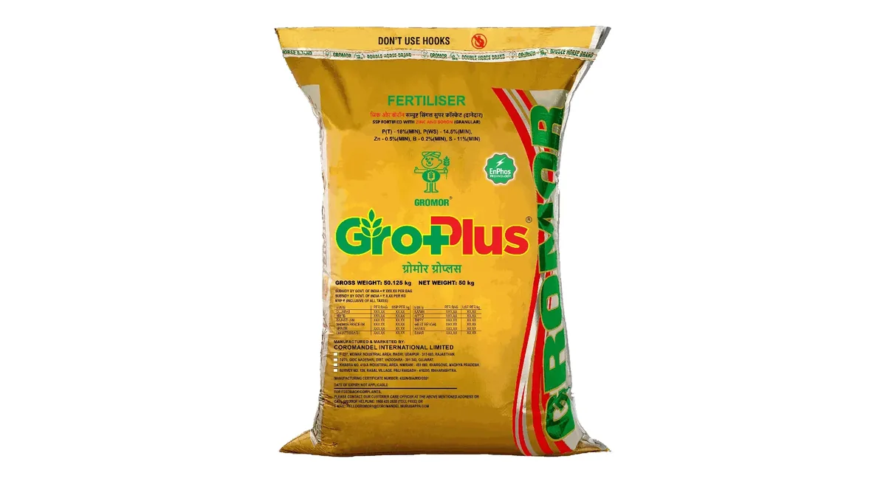

SSP खाद की पूरी गाइड
Single Super Phosphate (SSP) — Crop-wise Dose & SSP vs DAP
दुकानदार अक्सर DAP की तरफ इशारा कर देता है। पर सरसों, चना, मूंगफली और प्याज में SSP अक्सर बेहतर है — क्योंकि उसमें फॉस्फोरस के साथ गंधक भी मुफ्त मिलता है।
✍️ Kunal Rajput — KrashiMitra⏱️ 10 मिनट पढ़ें📅 अगस्त 2026

SSP — फॉस्फोरस के साथ गंधक और कैल्शियम देने वाली इकलौती आम फॉस्फेटिक खाद।
बोरे मत गिनिए, तत्व गिनिए
🚫
ऊपर से छिड़काव
पूरी बर्बादी
⚖️
1 DAP = 3 SSP
बराबर फॉस्फोरस के लिए
⚗️
11% गंधक
DAP में शून्य
📖
भूमिका
खाद की दुकान पर सबसे ज़्यादा पूछा जाने वाला सवाल यही है — "DAP लूँ या SSP?" दुकानदार अक्सर DAP की तरफ इशारा कर देता है, क्योंकि वह महँगा है और उसका बोरा हल्का पड़ता है। पर सच यह है कि सरसों, चना, मूंगफली, सोयाबीन और प्याज-लहसुन जैसी फसलों में SSP अक्सर DAP से बेहतर काम करता है — और सस्ता भी पड़ता है।
वजह एक छिपे हुए पोषक तत्व में है। SSP (सिंगल सुपर फॉस्फेट) में फॉस्फोरस के साथ लगभग 11% गंधक (सल्फर) और 21% कैल्शियम भी मुफ्त मिलता है, जबकि DAP में गंधक बिल्कुल नहीं होता। और तिलहन-दलहन के लिए गंधक उतना ही ज़रूरी है जितना नाइट्रोजन। इस लेख में SSP की सही मात्रा फसलवार, DAP से तुलना का पूरा गणित, डालने का सही तरीका, और वे गलतियाँ जिनसे आधी खाद बेकार चली जाती है।
विज्ञापन
🔍
SSP में क्या-क्या होता है?
SSP यानी सिंगल सुपर फॉस्फेट एक फॉस्फेटिक खाद है, पर इसकी असली ताकत यह है कि इसमें एक साथ चार तत्व मिलते हैं:
तत्व
मात्रा (लगभग)
फसल में इसका काम
फॉस्फोरस (P₂O₅)
16%
जड़ों का विकास, फूल और दाना बनना
गंधक / सल्फर (S)
लगभग 11%
तेल की मात्रा, प्रोटीन, दलहन-तिलहन में सबसे ज़रूरी
कैल्शियम (Ca)
लगभग 21%
जड़ और कोशिका की मज़बूती; मूंगफली में फली भरने के लिए ज़रूरी
पानी में घुलनशील P
अधिकांश भाग
पौधे को जल्दी उपलब्ध होता है
💡
याद रखने की एक लाइन: DAP सिर्फ फॉस्फोरस और नाइट्रोजन देता है; SSP फॉस्फोरस के साथ गंधक और कैल्शियम भी देता है। जिस फसल को गंधक चाहिए, वहाँ SSP का कोई मुकाबला नहीं।
⚖️
SSP बनाम DAP — पूरा गणित
किसान अक्सर बोरे गिनकर तुलना करते हैं, जो गलत तरीका है। सही तुलना तत्व की मात्रा से होती है। एक 50 किलो के बोरे में देखिए:
बात
DAP (50 किलो बोरा)
SSP (50 किलो बोरा)
फॉस्फोरस (P₂O₅)
23 किलो (46%)
8 किलो (16%)
नाइट्रोजन (N)
9 किलो (18%)
0
गंधक (S)
0
लगभग 5.5 किलो
कैल्शियम (Ca)
नहीं के बराबर
लगभग 10 किलो
उतना ही P देने के लिए
1 बोरा
लगभग 3 बोरे
ढुलाई व मज़दूरी
कम — हल्का पड़ता है
ज़्यादा — तीन गुना वज़न
इसलिए फैसला ऐसे कीजिए:
SSP चुनिए — सरसों, सूरजमुखी, सोयाबीन, मूंगफली, तिल, चना, अरहर, मसूर, प्याज, लहसुन में। इन सबको गंधक चाहिए और SSP वह मुफ्त दे देता है।
DAP चुनिए — जहाँ फॉस्फोरस के साथ शुरुआती नाइट्रोजन भी चाहिए और गंधक की कमी न हो, जैसे धान और गेहूं में; या जहाँ खेत दूर हो और ढुलाई भारी पड़ती हो।
सबसे अच्छा तरीका — दोनों मिलाकर: कई किसान गेहूं में DAP के साथ थोड़ा SSP भी डालते हैं, ताकि गंधक की ज़रूरत भी पूरी हो जाए। मिट्टी जाँच रिपोर्ट में गंधक कम दिखे तो यह सबसे समझदारी भरा रास्ता है।
विज्ञापन
🌾
फसलवार SSP की मात्रा और समय
नीचे दी गई मात्रा सामान्य संस्तुतियों पर आधारित अनुमान है, जिसे अपनी मिट्टी जाँच रिपोर्ट के अनुसार घटाया-बढ़ाया जाना चाहिए। SSP लगभग हमेशा बुवाई के समय आधार खुराक (बेसल डोज़) के रूप में ही डाला जाता है।
फसल
SSP प्रति एकड़ (लगभग)
कब और कैसे डालें
सरसों
100–150 किलो
पूरी मात्रा बुवाई के समय, कूँड़ में बीज से नीचे
गेहूं
100–150 किलो
पूरी मात्रा बुवाई के समय, आखिरी जुताई में मिलाकर
चना / मसूर / मटर
100–125 किलो
पूरी मात्रा बुवाई के समय
सोयाबीन
125–150 किलो
पूरी मात्रा बुवाई के समय
मूंगफली
125–150 किलो
बुवाई के समय; कैल्शियम फली भरने में मदद करता है
तिल
75–100 किलो
पूरी मात्रा बुवाई के समय
प्याज / लहसुन
150–200 किलो
क्यारी तैयार करते समय मिट्टी में मिलाकर
आलू
150–200 किलो
बुवाई के समय कूँड़ में
धान
100–150 किलो
अंतिम पडलिंग (कीचड़ बनाते) के समय
गन्ना
200–250 किलो
बुवाई के समय नाली में
⚠️
ये मात्राएँ सामान्य मार्गदर्शन के लिए हैं। सही मात्रा आपकी मिट्टी में पहले से मौजूद फॉस्फोरस और गंधक पर निर्भर करती है — और वह सिर्फ मिट्टी जाँच से पता चलता है। बुवाई से पहले मृदा स्वास्थ्य कार्ड बनवाइए और अपने कृषि विज्ञान केंद्र (KVK) या ज़िला कृषि अधिकारी से अपने क्षेत्र की संस्तुति की पुष्टि कर लीजिए। ज़रूरत से ज़्यादा फॉस्फोरस डालना पैसे की बर्बादी है और मिट्टी में ज़िंक की उपलब्धता भी घटा देता है।
🛠️
डालने का सही तरीका — यहीं आधी खाद बचती है
फॉस्फोरस मिट्टी में बहुत कम चलता है। जहाँ आपने डाला, वह लगभग वहीं रह जाता है। इसीलिए यूरिया की तरह इसे ऊपर से छिड़कना सीधे-सीधे पैसा फेंकना है।
हमेशा मिट्टी में मिलाकर या कूँड़ में डालें — बीज से थोड़ा नीचे और बगल में। जड़ें वहीं पहुँचती हैं।
ऊपर से छिड़काव (छिटकवाँ) कभी न करें — ऊपरी सतह पर पड़ा फॉस्फोरस मिट्टी से बँध जाता है और पौधे को नहीं मिलता।
बीज से सटाकर न डालें — सीधे संपर्क में आने पर अंकुरण प्रभावित हो सकता है। सीड-कम-फर्टिलाइज़र ड्रिल इसी समस्या का सबसे अच्छा हल है।
पूरी मात्रा बुवाई के समय: फॉस्फोरस को यूरिया की तरह किश्तों में देने की ज़रूरत नहीं। पौधे को इसकी सबसे ज़्यादा ज़रूरत शुरुआती जड़-विकास के समय होती है।
गोबर की खाद के साथ मिलाकर डालना फायदेमंद: इससे फॉस्फोरस मिट्टी से कम बँधता है और पौधे को ज़्यादा मिलता है।
पाउडर या दानेदार: दानेदार SSP डालने में आसान रहता है और हवा में उड़ता नहीं; पाउडर वाला सस्ता पड़ सकता है। दोनों का असर लगभग एक जैसा है।
🔬
फॉस्फोरस और गंधक की कमी कैसे पहचानें
दोनों की कमी अलग दिखती है, और उन्हें अलग पहचानना ज़रूरी है — क्योंकि इलाज अलग है।
पहचान
फॉस्फोरस (P) की कमी
गंधक (S) की कमी
कहाँ पहले दिखती है
पुरानी, नीचे की पत्तियों पर
नई, ऊपर की पत्तियों पर
रंग
पत्तियाँ गहरी हरी से बैंगनी/लाल आभा वाली
पूरी पत्ती एक-सी पीली (नसें भी पीली)
पौधे का आकार
ठिगना, कमज़ोर जड़, देर से फूल
पतला तना, छोटी पत्तियाँ
किन फसलों में आम
सभी, खासकर ठंडी मिट्टी में
सरसों, सोयाबीन, मूंगफली, प्याज, दलहन
💡
सबसे काम की पहचान: नाइट्रोजन की कमी में पीलापन नीचे की पुरानी पत्तियों से शुरू होता है, जबकि गंधक की कमी में ऊपर की नई पत्तियों से। खेत में यही एक बात देखकर आप तय कर सकते हैं कि यूरिया डालना है या गंधक वाली खाद।
✅
क्या करें — क्या न करें
✅ करें
❌ न करें
बुवाई के समय पूरी मात्रा कूँड़ में डालें
खड़ी फसल में ऊपर से छिड़कें
तिलहन-दलहन में SSP को प्राथमिकता दें
हर फसल में आँख मूँदकर DAP लें
गोबर की खाद के साथ मिलाकर डालें
बीज से सटाकर डालें
बोरा सूखी, हवादार जगह में रखें
नमी वाली जगह — SSP सीलकर ढेला बन जाता है
मिट्टी जाँच के आधार पर मात्रा तय करें
पड़ोसी की मात्रा नकल करें
भंडारण में यूरिया से अलग रखें
यूरिया के साथ मिलाकर लंबे समय रखें
🧪
असली SSP कैसे पहचानें
SSP उन खादों में है जिसमें मिलावट की शिकायतें सबसे ज़्यादा आती हैं, क्योंकि दिखने में यह साधारण भूरा-सलेटी दानेदार पदार्थ है।
हमेशा पक्का बिल लें — बिल पर बैच नंबर और निर्माता का नाम हो। बिना बिल की खाद पर कोई शिकायत नहीं हो सकती।
बोरे की सिलाई और छपाई देखें — सरकारी मानक के अनुसार निर्माता का नाम, तत्व की मात्रा और बैच नंबर छपा होना चाहिए।
एक आसान घरेलू जाँच: SSP के दाने हाथ से आसानी से नहीं टूटते और गरम तवे पर डालने पर पिघलते नहीं। (यह पक्की जाँच नहीं है, सिर्फ शुरुआती संकेत है।)
संदेह हो तो जाँच कराएँ: ज़िले की उर्वरक जाँच प्रयोगशाला में नमूना भेजा जा सकता है। शिकायत के लिए ज़िला कृषि अधिकारी से संपर्क करें।
लाइसेंसी दुकान से ही खरीदें और खरीद का रिकॉर्ड रखें।
⚠️
घरेलू जाँच सिर्फ मोटा-मोटी संकेत देती है, प्रमाण नहीं। किसी भी खाद की गुणवत्ता पर संदेह होने पर सरकारी उर्वरक जाँच प्रयोगशाला की रिपोर्ट ही अंतिम है — और शिकायत के लिए बिल अनिवार्य है।
🏁
निष्कर्ष
तीन बातें याद रखिए। पहली — SSP का असली फायदा उसका गंधक है, इसलिए सरसों, सोयाबीन, मूंगफली, चना और प्याज-लहसुन में यह DAP से बेहतर विकल्प है। दूसरी — फॉस्फोरस मिट्टी में चलता नहीं, इसलिए इसे हमेशा बुवाई के समय कूँड़ में, मिट्टी के अंदर डालिए, ऊपर से कभी नहीं। तीसरी — मात्रा मिट्टी जाँच से तय कीजिए, पड़ोसी से नहीं।
DAP का बोरा हल्का ज़रूर है, पर तिलहन और दलहन के खेत में SSP का बोरा ज़्यादा काम करता है।
विज्ञापन
❓
अक्सर पूछे जाने वाले सवाल
1SSP में कितना फॉस्फोरस और गंधक होता है?
SSP में लगभग 16% फॉस्फोरस (P₂O₅), 11% गंधक (सल्फर) और 21% कैल्शियम होता है। यानी 50 किलो के एक बोरे में करीब 8 किलो फॉस्फोरस और साढ़े 5 किलो गंधक मिलता है। गंधक और कैल्शियम ही वह चीज़ है जो SSP को DAP से अलग बनाती है — DAP में गंधक बिल्कुल नहीं होता।
2SSP और DAP में कौन सा बेहतर है?
यह फसल पर निर्भर करता है। तिलहन और दलहन (सरसों, सोयाबीन, मूंगफली, तिल, चना, मसूर) और प्याज-लहसुन में SSP बेहतर है, क्योंकि इन्हें गंधक चाहिए जो SSP मुफ्त देता है। धान और गेहूं में DAP सुविधाजनक है, क्योंकि उसमें फॉस्फोरस के साथ शुरुआती नाइट्रोजन भी मिलती है और ढुलाई कम पड़ती है — उतना ही फॉस्फोरस देने के लिए SSP के लगभग 3 बोरे लगते हैं।
3SSP कब और कैसे डालना चाहिए?
पूरी मात्रा बुवाई के समय, आधार खुराक के रूप में — कूँड़ में बीज से थोड़ा नीचे और बगल में, या आखिरी जुताई में मिट्टी में मिलाकर। फॉस्फोरस मिट्टी में चलता नहीं, इसलिए खड़ी फसल में ऊपर से छिड़कना पैसे की बर्बादी है। इसे यूरिया की तरह किश्तों में देने की भी ज़रूरत नहीं।
4एक एकड़ में कितना SSP डालना चाहिए?
सामान्य तौर पर गेहूं और सरसों में 100–150 किलो, चना-मसूर में 100–125 किलो, सोयाबीन-मूंगफली में 125–150 किलो, और प्याज-लहसुन-आलू में 150–200 किलो प्रति एकड़। यह सिर्फ मार्गदर्शन है — सही मात्रा मिट्टी जाँच रिपोर्ट और अपने KVK/ज़िला कृषि अधिकारी की संस्तुति से तय करें।
5गंधक (सल्फर) की कमी के लक्षण क्या हैं?
गंधक की कमी में पीलापन नई, ऊपर की पत्तियों से शुरू होता है और पूरी पत्ती एक-सी पीली पड़ती है (नसें भी)। यही इसे नाइट्रोजन की कमी से अलग करता है, जिसमें पीलापन नीचे की पुरानी पत्तियों से शुरू होता है। खेत में यह एक पहचान देखकर तय किया जा सकता है कि यूरिया डालना है या गंधक वाली खाद।
6क्या SSP को यूरिया के साथ मिलाकर रखा जा सकता है?
लंबे समय तक नहीं। SSP नमी खींचता है और यूरिया के साथ रखने पर दोनों सीलकर ढेला बन जाते हैं, जिससे डालना मुश्किल हो जाता है। दोनों को अलग-अलग, सूखी और हवादार जगह पर रखें। डालते समय खेत में एक साथ देना अलग बात है, पर भंडारण में मिलाकर न रखें।
7मूंगफली में SSP क्यों बेहतर माना जाता है?
क्योंकि इसमें कैल्शियम (लगभग 21%) भी मिलता है, और मूंगफली में फली भरने (पेगिंग) के लिए मिट्टी में कैल्शियम की उपलब्धता बहुत ज़रूरी होती है। साथ में गंधक भी मिल जाता है जो तेल की मात्रा बढ़ाता है — यानी एक ही खाद से तीन काम।
8नकली SSP की पहचान कैसे करें?
हमेशा लाइसेंसी दुकान से, बैच नंबर वाले बोरे में और पक्के बिल के साथ खरीदें — बिना बिल के कोई शिकायत दर्ज नहीं हो सकती। बोरे पर निर्माता का नाम और तत्व की मात्रा छपी होनी चाहिए। संदेह होने पर ज़िले की उर्वरक जाँच प्रयोगशाला में नमूना भिजवाएँ और ज़िला कृषि अधिकारी से शिकायत करें; घरेलू जाँच सिर्फ शुरुआती संकेत देती है, प्रमाण नहीं।
🌾
KrashiMitra.in — आपका विश्वसनीय कृषि साथी
मंडी भाव, सरकारी योजनाएं, बीज-खाद की जानकारी और फसल रोग उपचार — सब कुछ हिंदी में।